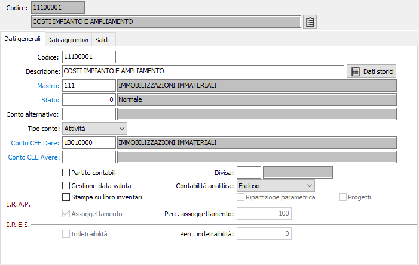

Dati generali

CODICE: codice alfanumerico di 8 caratteri che individua il sottoconto in esame. In caricamento, a conferma del codice vengono visualizzati automaticamente lo stato del conto con il valore 0 (modificabile), il tipo conto (modificabile) desunto per analogia dal mastro cui appartiene il sottoconto ed il/i codici Conto CEE Dare e Conto CEE Avere (modificabili), pure desunti per analogia dal mastro cui appartiene il sottoconto. Se il mastro non esiste, viene inibita la generazione del relativo sottoconto. In variazione, a conferma vengono visualizzati i valori di tutti i campi. Su questo campo sono attive le funzioni di ricerca (F9).
DESCRIZIONE CONTO: campo alfanumerico di 50 caratteri per descrivere il sottoconto.
Il pulsante consente di richiamare la procedura Dati storici anagrafiche mostrando i dati relativi al codice selezionato se presenti.
MASTRO: codice alfanumerico di 8 caratteri alfanumerici che individua il mastro al quale il sottoconto è riferito. Su questo campo sono attive le funzioni di ricerca (F9) ed accesso interattivo alla tabella collegata (CTRL+W).
STATO: codice numerico, presente nella tabella Stato conti, per definire lo stato del sottoconto. Il valore 0 indica sottoconto libero; i valori da 1 a 6 assumono il significato indicato dall’utente all’atto del loro inserimento; i valori 7 e 8 sono disabilitati; il valore 9 (bloccato) inibisce un successivo utilizzo del sottoconto nelle nuove transazioni contabili pur consentendo l’analisi delle operazioni contabili già esistenti. Su questo campo sono attive le funzioni di ricerca (F9) ed accesso interattivo alla tabella collegata (CTRL+W).
CONTO ALTERNATIVO: codice alfanumerico di 8 caratteri, presente nella tabella Sottoconti, significativo solo nel caso in cui il campo “stato” abbia valore 9. In tale evenienza, l’inserimento di un codice alternativo di sottoconto in questo campo ne determina la visualizzazione nel caso in cui l’utente richiami il sottoconto bloccato per una nuova transazione contabile. Su questo campo sono attive le funzioni di ricerca (F9) sulla tabella Sottoconti.
TIPO CONTO: combo box per identificare la classe del conto. In caricamento, viene proposto automaticamente il tipo esistente sul Mastro di riferimento, modificabile. Valori possibili:
attività;
passività;
costi;
ricavi;
conti d'ordine attivi;
conti d’ordine passivi;
conti di servizio.
RIFERIMENTO IV DIR. CEE DARE: codice alfanumerico di 8 caratteri presente nella tabella Conti IV Direttiva CEE che definisce a quale “voce” del Bilancio a norma CEE deve accorparsi il sottoconto in esame, prescindendo dal segno del suo saldo. In caricamento, viene proposto automaticamente il conto di riferimento Dare IV Direttiva CEE presente sul mastro relativo, modificabile dall’utente. Su questo campo sono attive le funzioni di ricerca (F9) ed accesso interattivo alla tabella collegata (CTRL+W).
RIFERIMENTO IV DIR. CEE AVERE: codice alfanumerico di 8 caratteri presente nella tabella Conti IV Direttiva CEE. Il campo deve essere compilato solo per il limitato numero di sottoconti (banche, clienti, fornitori, debiti tributari, ecc) che riepilogano a voci diverse del Bilancio a norma CEE in funzione del segno del saldo. In tal caso, in questo campo deve essere inserito il codice del sottoconto IV Direttiva CEE a cui si deve accorpare il sottoconto in esame nel caso in cui presenti un saldo Avere. In caricamento, viene proposto automaticamente se presente il conto di riferimento Avere IV Direttiva CEE presente sul mastro relativo, modificabile dall’utente. Su questo campo sono attive le funzioni di ricerca (F9) ed accesso interattivo alla tabella collegata (CTRL+W).
GESTIONE PARTITE CONTABILI: flag significativo solo per i conti patrimoniali, se è attivo il modulo “Gestione partite contabili”. In tal caso, se il flag è attivo significa che il sottoconto in esame deve essere gestito a partite patrimoniali, ovvero generare scadenzari per debiti / crediti diversi.
DIVISA: in caso di gestione delle partite contabili indica la divisa di gestione del sottoconto.
GESTIONE DATA VALUTA: flag significativo solo per i sottoconti del/i mastro/i Banche, se il mastro di riferimento è qualificato come Tipo mastro banche. In tal caso, l’attivazione del flag comporterà la richiesta della “data di valuta” nelle transazioni contabili relative al sottoconto banca in esame.
STAMPA SU LIBRO INVENTARI: definisce se il sottoconto deve comparire nei partitari (casella con segno di spunta).
CONTABILITÀ ANALITICA: significativo solo per gli utenti che dispongono della procedura di contabilità analitica. Consente di specificare il metodo di ripartizione sulla contabilità analitica. Valori possibili: escluso, manuale, automatico.
RIPARTIZIONE PARAMETRICA: in caso di gestione della contabilità analitica consente di specificare se utilizzare la ripartizione parametrica (casella con segno di spunta) oppure percentuale (casella vuota).
PROGETTI: attivo per i sottoconti del conto economico; definisce se la movimentazione del conto è collegata alla gestione progetti (casella di spunta); se attivo il collegamento, in fase di movimentazione da prima nota, saranno richiesti i dati relativi alla ripartizione del un costo/ricavo all’interno della gestione progetti. Tale funzionalità viene attivata dal parametro “Integrazione con prima nota contabile” della configurazione Progetti/Commesse.
ASSOGGETTAMENTO IRAP: significativo solo per i conti di reddito. Se attivo, significa che il conto è soggetto ad IRAP
PERCENTUALE ASSOGGETTAMENTO IRAP: campo numerico di 3 interi e 2 decimali, significativo se il flag precedente è attivo. Può contenere una eventuale percentuale ridotta di assoggettamento all’Irap.
Indetraibilità IRES: flag significativo solo per i conti di reddito. Se attivo, significa che il conto è indetraibile ai fini Ires o Irpef.
PERCENTUALE Indetraibilità IRES: campo numerico di 3 interi e 2 decimali, significativo se il flag precedente è attivo. Può contenere la percentuale di indetraibilità Ires / Irpef. Il valore 100 indica che il saldo del sottoconto è completamente indetraibile ai fini Ires / Irpef.